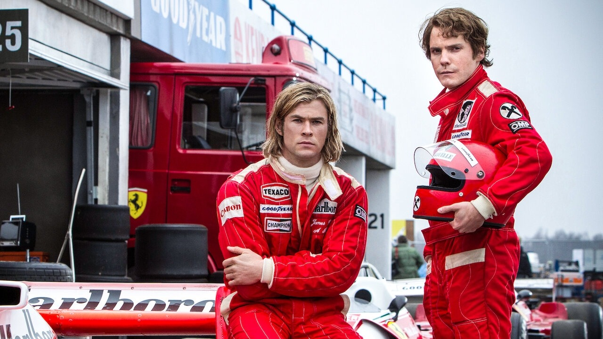

Some of my Favourite movies are:-
Stranger Things

Stranger Things is set in the fictional rural town of Hawkins, Indiana, in the 1980s. The nearby Hawkins National Laboratory ostensibly performs scientific research for the United States Department of Energy but secretly experiments with the paranormal and supernatural, sometimes with human test subject
Top Gun: Maverick

After more than 30 years of service as one of the Navy's top aviators, Pete "Maverick" Mitchell is where he belongs, pushing the envelope as a courageous test pilot and dodging the advancement in rank that would ground him. Training a detachment of graduates for a special assignment, Maverick must confront the ghosts of his past and his deepest fears, culminating in a mission that demands the ultimate sacrifice from those who choose to fly it.
- Rush

In the mid-1970s, charismatic English playboy James Hunt (Chris Hemsworth) and Austrian perfectionist Niki Lauda (Daniel Brühl) share an intense rivalry in Formula 1 racing. Driving vehicles that are little more than gas-filled, rolling bombs, Hunt and Lauda burn up the track, all the while pushing themselves to the breaking point of physical and mental endurance. Meanwhile, the women (Olivia Wilde, Alexandra Maria Lara) in their lives can only watch as both drivers risk death with every lap.